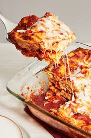

Lasagna

Description
Lasagna is a classic Italian dish featuring layers of pasta, rich meat sauce, creamy béchamel, and melted cheese. This hearty comfort food is perfect for family dinners and gatherings. The combination of tender pasta sheets, savory sauce, and gooey cheese makes lasagna an all-time favorite.
Ingredients
- Lasagna noodles
- Ground beef
- Tomato sauce
- Ricotta cheese
- Mozzarella cheese
- Parmesan cheese
- Onions
- Garlic
- Salt and pepper
- Italian seasoning
Instruction
- Preheat the oven to 375°F (190°C).
- Cook the lasagna noodles according to package instructions.
- In a large skillet, cook the ground beef with onions and garlic until browned.
- Stir in the tomato sauce and season with salt, pepper, and Italian seasoning.
- Layer the noodles, meat sauce, ricotta, and mozzarella in a baking dish.
- Repeat layers and finish with a generous topping of mozzarella and Parmesan.
- Bake for 45 minutes, until the cheese is bubbly and golden.
- Let the lasagna rest for 10 minutes before serving.